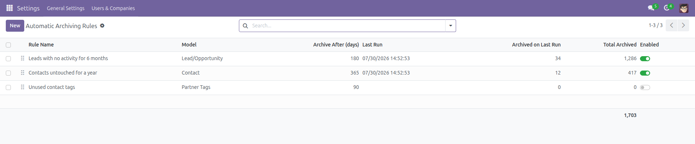
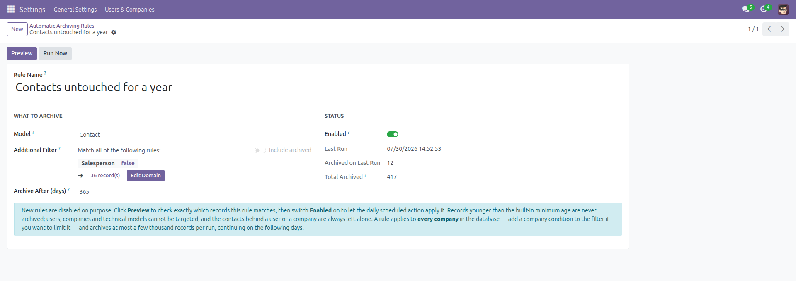
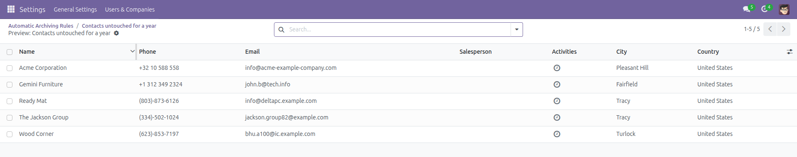
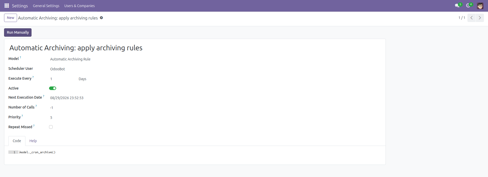

Automatic Archiving Rules
Old records archive themselves, on a schedule you set.
Lost leads from three years ago, tasks closed last winter, contacts nobody has touched since the import — Odoo keeps every one of them in every list, every dropdown and every report, forever. There is no built-in way to archive them on a schedule, so lists only ever grow.
This module lets you define archiving rules: pick a model, add an optional filter, say how long a record may stay untouched, and a daily scheduled action does the rest.
Free and open source (LGPL-3), Odoo 14.0 through 19.0.
- Any model that supports archiving — leads, tasks, contacts, products, your own models: anything with an Active field.
- Your own filter — an optional extra domain, combined with the age condition, so a rule can target exactly "lost leads" or "tags with no contacts".
- Preview before anything happens — one click opens the exact list of records the next run would archive. It changes nothing.
- Counters you can trust — every rule shows when it last ran, how many records it archived then, and how many in total.
- Daily, unattended — one scheduled action applies every enabled rule; Run Now is there when you do not want to wait.
Built to be safe. Archiving hides records, so this module is deliberately cautious:
every new rule is disabled until you turn it on; a minimum age is enforced in code, so a mistyped 0 can never empty a list;
users, companies and technical (ir.*) models are refused outright — and so are the contact records behind a user or a company, even on a plain "stale contacts" rule;
a model with no Active field is rejected when the rule is saved, as is a filter that does not apply to it;
and one record that cannot be archived is logged and skipped instead of aborting the whole run.
Screenshots

All your rules in one list: model, age, when each last ran, and how much it has archived. The Enabled switch is the only thing that lets a rule act.

A rule: the model, an optional filter built with the standard domain editor, and the number of days a record may stay untouched.

Preview opens exactly the records the next run would archive — the same set, nothing changed.

One daily scheduled action applies every enabled rule. Change its frequency, or disable it, like any other cron.
Installation
- Open Apps, search for Automatic Archiving Rules and click Install.
- Only the standard
base module is required — no other dependency.
- Installing creates one scheduled action, Automatic Archiving: apply archiving rules. It has nothing to do until you create a rule.
Configuration
- Enable the developer mode, then go to Settings → Technical → Automation → Automatic Archiving.
- Click New and name the rule, for example Leads with no activity for 6 months.
- Choose the Model. Models without an Active field, and protected models such as Users, Companies and technical
ir.* models, are refused with an explanation.
- Optionally set an Additional Filter with the domain editor to narrow the rule down.
- Set Archive After (days) — how long a record may go without being modified. Values under the built-in minimum are raised to it.
- Leave Enabled off for now. Only administrators (Settings access) can see or edit rules.
Usage
- On the rule, click Preview. The exact records the rule matches open in a list — nothing is modified.
- Happy with the list? Switch Enabled on. The daily scheduled action will apply the rule from then on.
- In a hurry, click Run Now to archive the matching records immediately.
- Come back any time: Last Run, Archived on Last Run and Total Archived tell you what the rule has been doing.
- Archived records are never deleted. Any list shows them again with the standard Archived filter, and they can be restored one by one or in bulk.
- To pause a rule, switch Enabled off; to retire it, archive or delete the rule itself.
- A rule applies to every company in the database — add a company condition to the filter if you want to limit it — and archives at most a few thousand records per run, continuing on the following days until it has caught up.
Version notes
Identical behavior on every supported series (14.0 – 19.0). The scheduled action is configured per series so it keeps running instead of firing once.
License: LGPL-3 · Source on GitHub · Issues and contributions welcome.